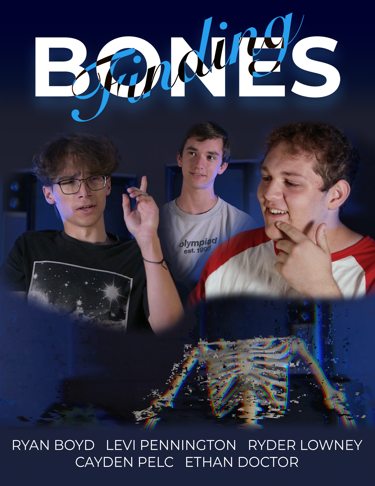

My Name is Ryan B, and I would like to tell you a little bit about myself.
My hometown is in a western suburb of Chicago, Illinois. I am an editor for a TV show in The Discovery Channel. I am a freshman here at huntington, and I am majoring in film production. It's no suprise that I like film, but I have some other hobbies. They inclue:
While I am at Huntington Universtiy, I am focusing the most on film production. In fact, I just finished a short film project, called Finding Bones. In this short film, the residents of Baker Second recount the dissapearance and rescue of the floor skeleton, Drake Bones. My role on the project was editor. While on set, I also ended up being the producer.
In addition to being editor, will be staring in the next short film that I will be a part of making. I will get to incorporate my other hobby of riding unicycles. The premise of the film is how riding a unicycle can make your day better. We will be shooting riding shots in the woods, which is my favorite place to ride my unicycle.